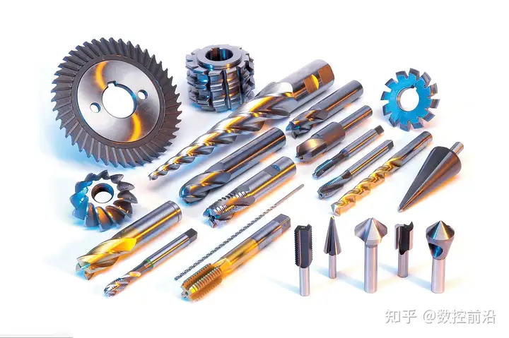
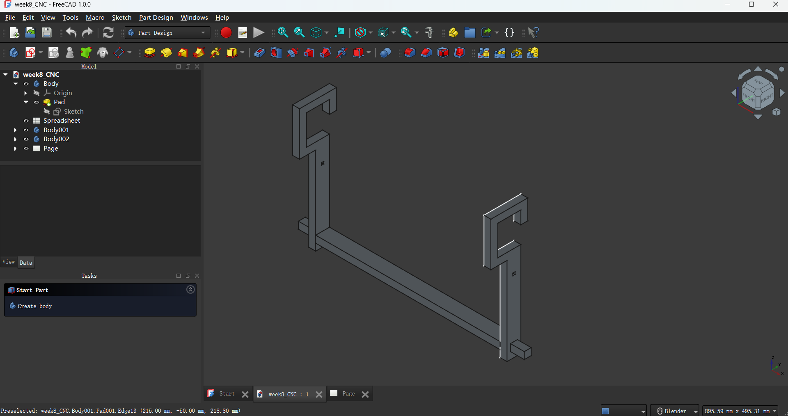
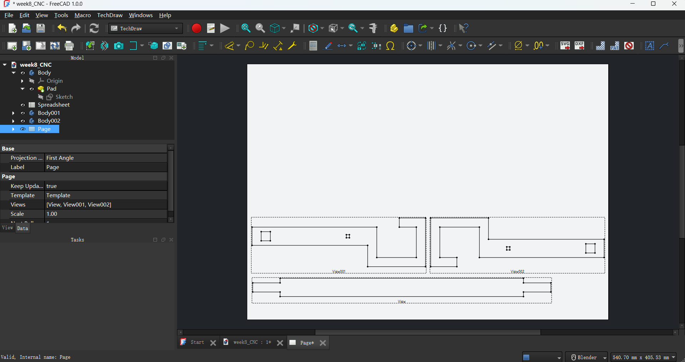
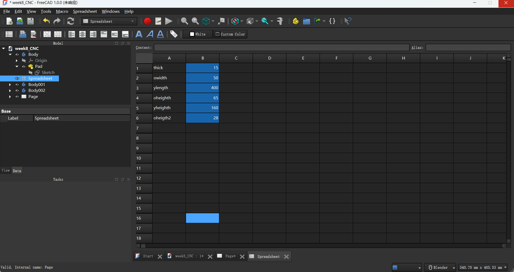
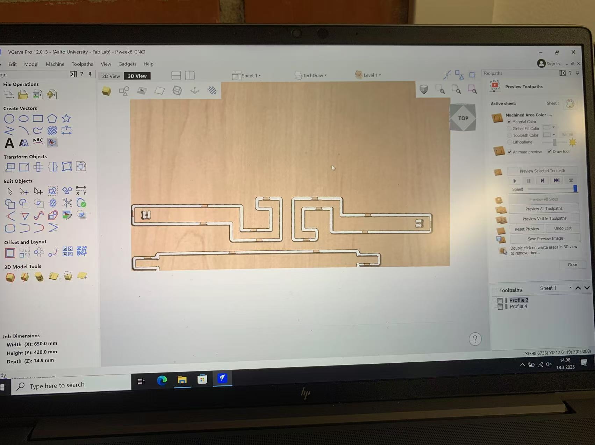
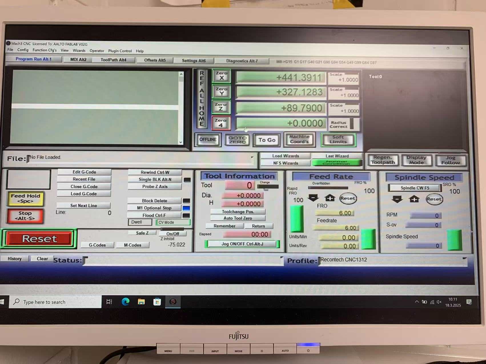
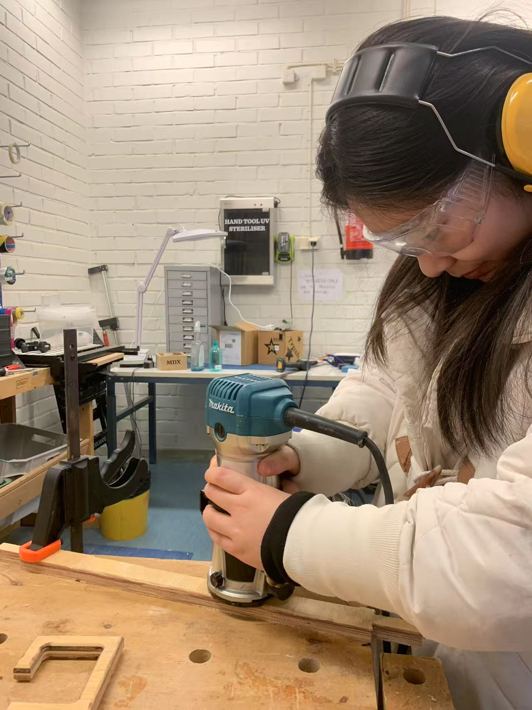
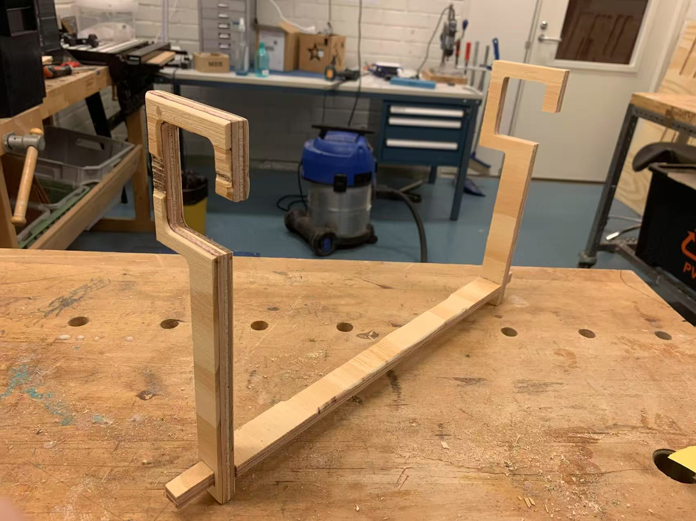

Basics of CNC Machining
CNC machining (computer numerical control machining) is subtractive manufacturing, where machine controlled by computers can precisely remove/ cut and shape material (like wood/ metal/ plastic/ or...) from a solid block, unlike other digital fabrication methods liek 3D printing is Additive Manufacturing (bulid layers) or laser cutting uses laser (focused light) to cut/ engrave/ milling. CNC can offer precision greater precision and material versatility. CNC machines can be multi-axis (over 3 axis). It include various types like CNC milling, CNC turning, CNC laser cutting, and CNC EDM. CNC milling is the most common one, which always used for surface machining, contour cutting, drilling...
Tools(end mill) in CNC
Parameters: The CNC milling tools including parameters like material, diamerter, length, cutting edge geometry, flute numebr, speed and feed.
Flute: For chip evacuation. It's the spiral grooves on the end mill. The cutting edge of an end mill are typically made of multiple flutes. These flutes can help with cutting and chip removal, different machining requirements need different shape and numbers of flutes.
Shank and Shaft: The shank is inserted into machine spindle, which is thicker and above the shaft, providing stablility. Shaft is a cylindrical part located at the central at the tool, directly participants in cutting.
Collet: A clamp that hold the end mill in the spindle, ensure the end mill be fixed and centered during operation.

Feeds and Speeds
Feeds and speeds are the rate of the tools move through materials(feed) and the rotational rate of the tools(spindle speed).
Horizontal and Vertical Feed Rate(Plunge Rate): Horizontal feed rate is the rate that tools moving through horizontal(X/Y movement), while the vertical feed rate(also known as plunge rate) is the tools moving through vertical(Z movement) direction(enter the material). Both of them are measured in mm/min, e.g. 2000mm/min. Horizontal influence the cutting surface and vertical influce the cutting depth.
Chip Load: It is the amount of material each cutting edge removes per revolution. These rates are linked to chip load.
Depth of Cut: It is the distance the tool penetrates into the material, influencing the material removal rate.
Formula 1: HF(horizontal feed rate) = NF(number of flutes) * CL (chip load)* SP(spindle speed)
Formula 2: VF(vertical feed rate) = NF(horizontal feed rate) / 4
FreeCAD + CNC
I modeled a hanger consistent of 3 parts(two hooks and one bar), I use transform of the body to move it so that I can assemble it in Part Design mode. I do it to make sure all my parts can fit each other perfectly.
Then I lay out the three pars in TechDraw mode to prepare for my CNC milling.
Spreatsheet helps it being a parametric design object. For instance, I use parameter "thick" to contral the snap together part and thickness part since I've been given a 15mm +/-0.5mm thick 120x120cm plywood sheet for its production, but the parameters can always change if there are some situation that the design doesn't fit the given board.



CNC Milling
I need to use fixture and clamps to fix the material to the machine bed, it can avoid the material from shifting or vivrating during the milling process.
I need to use VCarve to generate the tool path to control the movement and cutting of the cutting tool, during the path, it will leave some tabs as connector to keep the material(workpiece) detaching from the base or fixture while being cut.
I use CNC machine to cut the material along the designated path, carve the material into the designated shap.
After miling, I use chisel to remove the excess material include tabs, use polish machine and sandpaper to polish, and then assemble these parts as freeCad part design mode.




Here is the hanger's FreeCad file I'm talking about.